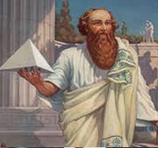

Famous Mathematicians

Pythagoras
Pythagoras (c. 570 – c. 495 BC) was an ancient Ionian Greek
philosopher and the eponymous founder of Pythagoreanism. His political and
religious teachings were well known in Magna Graecia and influenced the
philosophies of Plato, Aristotle, and, through them, Western philosophy.
Knowledge of his life is clouded by legend, but he appears to have been the son
of Mnesarchus, a gem-engraver on the island of Samos. Modern scholars
disagree regarding Pythagoras's education and influences, but they do agree that,
around 530 BC, he travelled to Croton, where he founded a school in which
initiates were sworn to secrecy and lived a communal, ascetic lifestyle. This
lifestyle entailed a number of dietary prohibitions, traditionally said to have
included vegetarianism, although modern scholars doubt that he ever advocated
for complete vegetarianism.
The teaching most securely identified with Pythagoras is metempsychosis, or the
"transmigration of souls", which holds that every soul is immortal and, upon
death, enters into a new body. He may have also devised the doctrine of musica
universalis, which holds that the planets move according to mathematical
equations and thus resonate to produce an inaudible symphony of music.
Scholars debate whether Pythagoras developed the numerological and musical
teachings attributed to him, or if those teachings were developed by his later
followers, particularly Philolaus of Croton. Following Croton's decisive victory
over Sybaris in around 510 BC, Pythagoras's followers came into conflict with
supporters of democracy and Pythagorean meeting houses were burned.
Pythagoras may have been killed during this persecution, or escaped to
Metapontum, where he eventually died.
[Wikipedia]

Johann Carl Friedrich Gauss
Johann Carl Friedrich Gauss (30 April 1777 – 23 February
1855) was a German mathematician and physicist who made significant
contributions to many fields in mathematics and sciences.Sometimes referred
to as the Princeps mathematicorum (Latin for "the foremost of
mathematicians") and "the greatest mathematician since antiquity", Gauss had an
exceptional influence in many fields of mathematics and science, and is ranked
among history's most influential mathematicians.
The year 1796 was productive for both Gauss and number theory. He discovered
a construction of the heptadecagon on 30 March. He further advanced
modular arithmetic, greatly simplifying manipulations in number theory. On 8
April he became the first to prove the quadratic reciprocity law. This remarkably
general law allows mathematicians to determine the solvability of any quadratic
equation in modular arithmetic. The prime number theorem, conjectured on 31
May, gives a good understanding of how the prime numbers are distributed
among the integers.
[Wikipedia]